Articles¶
Introduction¶
On the Website, under the topic homepage, this is the section as "Most Helpful Articles". Articles are the blogs written about the topics, which provide awareness and answers about the good to know facts for any topic. These articles can be read in a small duration even on the go. Also, references are provided to the sources of facts and information.
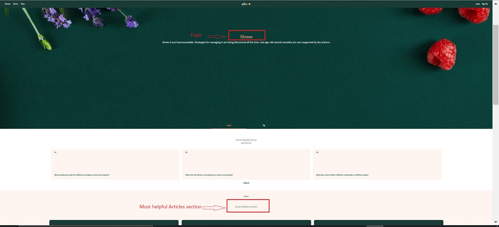
Create an Article¶
Let's see a step-by-step process of creating a new article on the website:
- Go to -> altpluscare.com/wp-admin
- Login with the credentials
-
Click on Article -> Add New
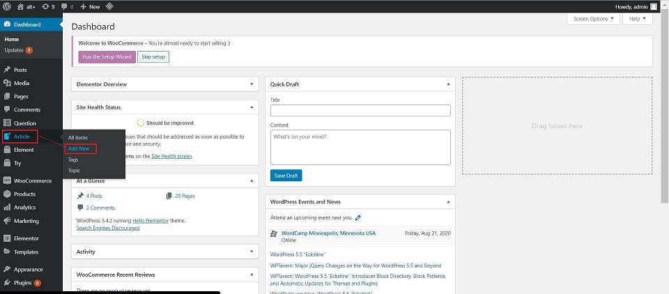
-
Add title : Add the Article name here.
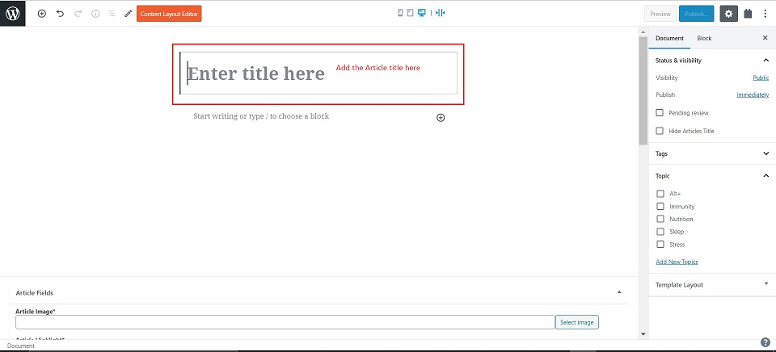
-
Add content by choosing the block as per requirement
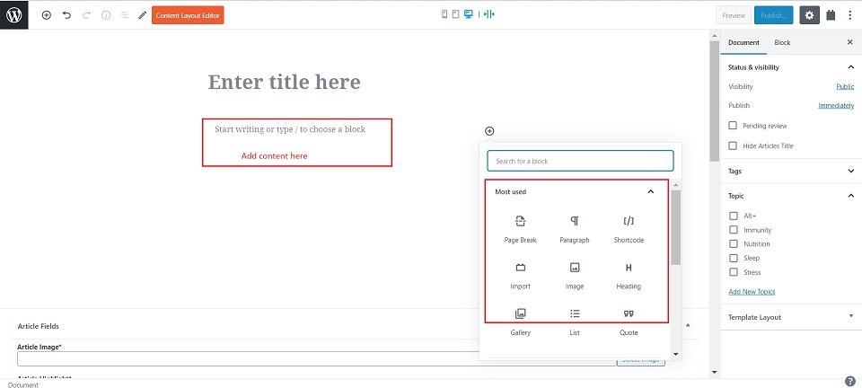
Article Fields¶
In this section, the below fields are to be populated:
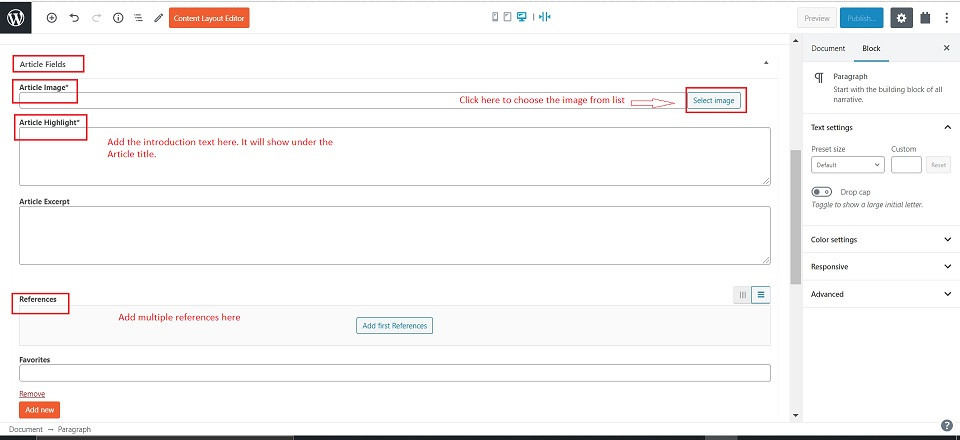
- Article Image : This is the image that shows on the Article placard on the Topic homepage. Click on "Select image" to choose the image from the list.
-
Article Highlight : This is the text which is written below the Article title. This is how the article title and highlight look on the website.
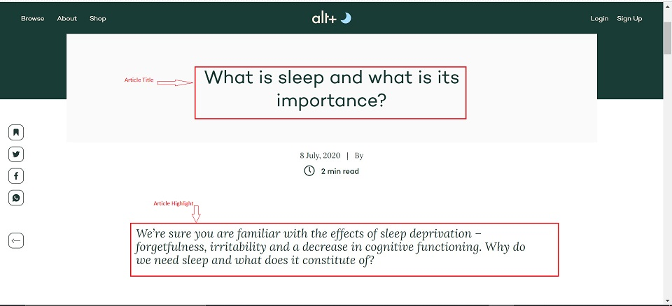
-
References : Here the reference links are added which correspond to the footnote numbers in the content. These footnotes/references take you to the source pages. To add these references, follow the below steps:
-
Click on "Add first References"
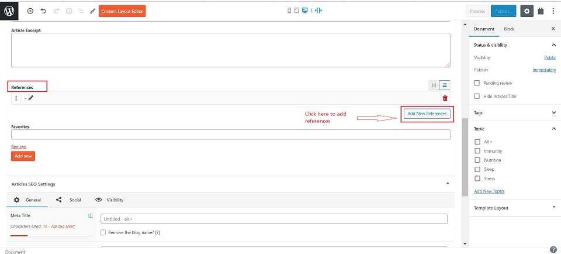
-
Add "Reference number" - This number corresponds to the footnote number in the content part.
- Add "Reference name"
-
In "Reference Link" add the URL for the source website.
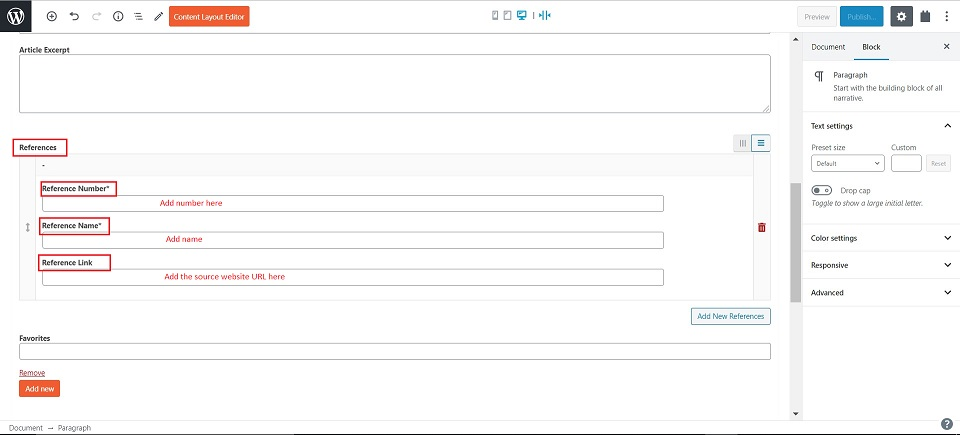
This is how the references show at the end of the article on the website:
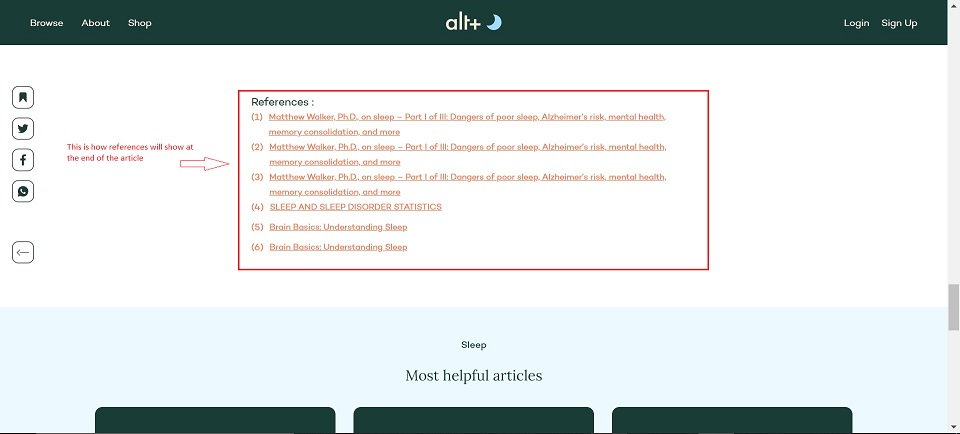
-
Question Article Relationship¶
This is the section at the bottom of the page. Do not make any Changes to this section.
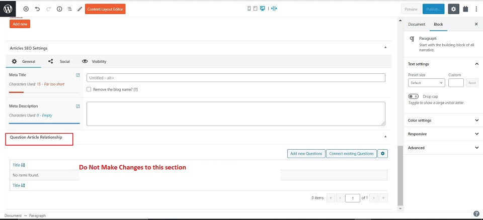
Right Side Panel¶
On the right side panel, under the Document tab, populate the following fields:
-
Topic : Check mark the topic name with which you want to connect the question to.
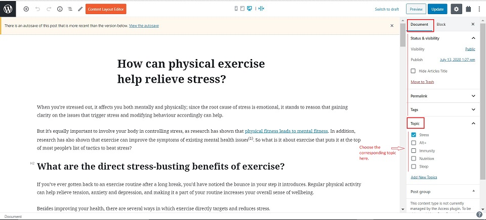
Note: Avoid selecting multiple topics here.
Publish¶
Click on the Publish button on the top right side corner. This will save the new article added.
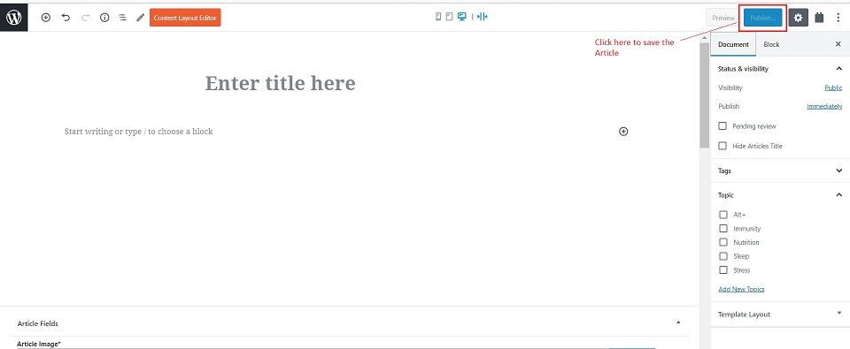